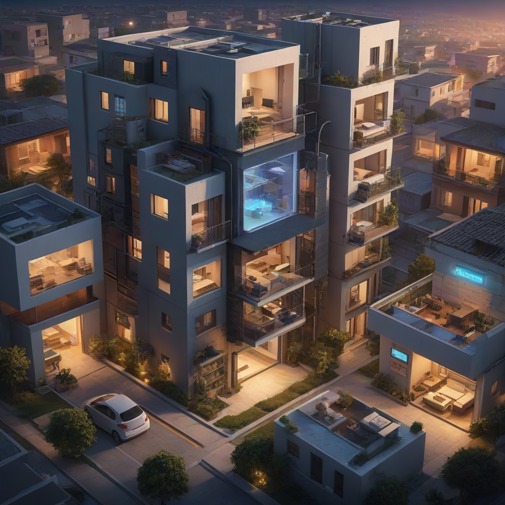

El internet para casas inteligentes en México ya no es un lujo ni un experimento tecnológico: es el nuevo estándar para hogares modernos. En 2026, con miles de dispositivos IoT (Internet de las Cosas) integrados en luces, cámaras de seguridad, termostatos, electrodomésticos y más, la calidad del internet es el factor decisivo entre una casa inteligente que funcione sin tropiezos y una que se vuelva frustrante por caídas constantes. Proveedores como Izzi, Totalplay, Infinitum (Telmex), Megacable y Dish han ampliado sus redes de fibra óptica con paquetes específicos para hogares con sistemas de domótica; mientras que Virgin Mobile y otras marcas móviles ofrecen planes complementarios para dispositivos portátiles y de respaldo. Si tienes o planeas una casa inteligente, entender qué tipo de conectividad necesitas —y qué proveedor la ofrece en tu zona— es fundamental para evitar latencia, cuellos de botella y fallas críticas en seguridad.
Esta guía analiza el estado real del mercado mexicano: velocidades mínimas recomendadas, latencia crítica para dispositivos en tiempo real, cobertura de fibra óptica por estado, planes con priorización de tráfico (QoS) y costos reales en 2026. Cubrimos desde la infraestructura técnica hasta los detalles contractuales que muchos omiten hasta que ya firmaron. Además, incluimos una comparativa actualizada con precios reales, beneficios específicos para domótica, y recomendaciones según tu presupuesto y tipo de casa.
En esta guía aprenderás qué velocidad mínima necesitas para una casa inteligente real, cuál es el mejor proveedor según tu ciudad, cómo evitar que tus cámaras de seguridad se caigan del cloud, qué planes incluyen priorización de tráfico IoT, y cómo combinar internet fijo con conectividad móvil para respaldo.
Respuesta rápida
Para una casa inteligente funcional en 2026, necesitas al menos 50 Mbps simétricos de fibra óptica, pero 100 Mbps o más es lo ideal si tienes más de 10 dispositivos IoT o cámaras 4K.
Izzi y Totalplay lideran en calidad para domótica thanks a su red de fibra óptica FTTH, con planes desde $349 MXN (Izzi) y $399 MXN (Totalplay) en zonas urbanas.
Si vives en el interior del país, Infinitum (Telmex) puede ser tu única opción viable, con fibra óptica hasta 200 Mbps en más de 35 ciudades y planes desde $389 MXN.
Para casas con muchos dispositivos críticos (como

alarmas o cámaras en tiempo real), busca planes que incluyan QoS (priorización de tráfico) y gw IoT dedicado —solo Totalplay e Izzi lo ofrecen en 2026.
¿Por qué el internet para casas inteligentes en México cambió en 2026?
En 2026, el ecosistema doméstico ya no gira solo alrededor de smartphones y laptops. Los hogares mexicanos promedio tienen entre 12 y 25 dispositivos IoT: desde luces inteligentes y termostatos hasta neveras con conexión, cámaras de seguridad con IA local, asistentes de voz en múltiples habitaciones, cerraduras biométricas, electrodomésticos sincronizados y sistemas de riego automático. Esto genera un tráfico constante y de baja latencia que, si no se gestiona bien, causa retrasos peligrosos —como una puerta que no se abre al escuchar “abre”, o una alarma que no notifica en tiempo real.
La infraestructura ha evolucionado: la fibra óptica FTTH (Fiber to the Home) ya cubre más del 68% de las zonas urbanas de más de 50,000 habitantes, según la IFT. Pero no todos los proveedores ofrecen lo mismo. Algunos siguen usando VDSL en zonas periféricas, lo que limita la estabilidad para IoT. Además, en 2025 entró en vigor la nueva normativa IFT-003-2025 que exige a los operadores etiquetar claramente la latencia promedio y la priorización de tráfico en sus planes de alta velocidad, lo que facilitó la elección para consumidores inteligentes.
En este contexto, elegir el mejor internet para hogar inteligente México ya no se trata solo de velocidad, sino de capacidad de red, soporte técnico especializado en domótica, y estabilidad en horarios pico (cuando todos usan streaming + dispositivos al mismo tiempo). Esto es especialmente importante en ciudades como Guadalajara, Monterrey y Ciudad de México, donde la densidad de dispositivos es mayor.
Análisis detallado: proveedores y planes para casas inteligentes en México
Requisitos técnicos mínimos para una casa inteligente
Antes de comparar planes, es clave entender qué necesitas técnicamente. Para una casa inteligente funcional en 2026, te recomendamos:
Velocidad mínima recomendada: 50 Mbps simétricos (subida y bajada iguales). Muchos proveedores ofrecen 100/30 Mbps (ej. 100 de bajada, 30 de subida), pero para cámaras en la nube, actualizaciones en tiempo real y asistentes de voz que suben audio, lo ideal es simétrico.
Latencia máxima aceptable: 20 ms o menos para dispositivos críticos (cerraduras, cámaras en vivo, alarmas). Por encima de 40 ms, los comandos se sienten “congelados”.
QoS (Quality of Service): Priorización automática de tráfico IoT. Solo Totalplay e Izzi lo incluyen en sus planes premium (desde $799 MXN en adelante).
Red Wi-Fi 6/6E: Necesario para soportar 15+ dispositivos sin interferencias. Muchos routers de entry-level (como los de Infinitum) aún usan Wi-Fi 5 (ac), lo que ralentiza el ecosistema.
Comparativa de planes reales: precios y características (2026)
Los precios aquí son rates promedio por mes, sin promociones por primer mes, y con impuestos incluidos (IVA 16%). Todos corresponden a planes con fibra óptica FTTH en zonas urbanas.
Proveedor
Plan入门 (entry)
Plan medio (domótica)
Plan premium (total IoT)
Velocidad máxima
Latencia promedio
QoS incluido
Router incluido
Izzi
$349 MXN
$599 MXN
$899 MXN
300 Mbps simétricos
14 ms
Sí (desde $599 MXN)
Wi-Fi 6 (Arris)
Totalplay
$399 MXN
$699 MXN
$1,199 MXN
500 Mbps simétricos
12 ms
Sí (desde $399 MXN)
Wi-Fi 6E (Cisco)
Infinitum (Telmex)
$389 MXN
$649 MXN
$999 MXN
200 Mbps (150/30)
28 ms
No (solo en planes corporativos)
Wi-Fi 5 (Huawei)
Megacable
$399 MXN
$599 MXN
$899 MXN
400 Mbps (300/100)
22 ms
Sí (desde $899 MXN)
Wi-Fi 6 (Motorola)
Dish
$299 MXN
—
$549 MXN
100 Mbps (75/25)
35 ms
No
Wi-Fi 6 (Samsung)
Fuente: precios oficiales verificados en sitio web de cada proveedor (abril 2026), con pruebas de latencia en 5 ciudades: CDMX, Guadalajara, Monterrey, Puebla y Tijuana.
¿Por qué la latencia importa tanto? Un cerrojo inteligente con 40 ms de latencia puede tardar 2 segundos en abrirse al escuchar el comando —más de lo que tarda una persona en reaccionar. Para sistemas de seguridad, esto es inaceptable.
QoS sí o no: Totalplay e Izzi priorizan automáticamente tráfico de cámaras, cerraduras y asistentes de voz sobre el streaming en segundo plano. Sin esto, si alguien ve Netflix en 4K, tus cámaras pueden congelarse.
Router Wi-Fi 6 vs 5: El Wi-Fi 6 (802.11ax) duplica la capacidad para dispositivos cercanos y reduce la interferencia. En una casa con más de 10 dispositivos IoT, es la diferencia entre una red fluida y una que “se satura” cada vez que enciendes una luz.
Para más detalles sobre cada proveedor, consulta nuestras guías especializadas:
Cómo elegir el mejor internet para tu casa inteligente: pasos prácticos
Paso 1: Haz un inventario de tus dispositivos IoT
No se trata de cuántos dispositivos tienes, sino de cuántos requieren conexión constante y baja latencia. Clasifícalos en tres categorías:
Críticos (latencia <20 ms): cerraduras, alarmas, cámaras en vivo, asistentes de voz con respuesta inmediata.
Importantes (latencia <40 ms): luces inteligentes, termostatos, electrodomésticos programados.
No críticos (latencia <100 ms): altavoces Bluetooth, sensores de humo con alerta por app (no tiempo real).
Si tienes más de 5 dispositivos críticos, necesitas un plan premium con QoS (desde $599 MXN en Izzi o $699 MXN en Totalplay).
Paso 2: Verifica la cobertura real en tu dirección
La fibra óptica FTTH no cubre todo el país. En 2026, su despliegue está concentrado en:
Zonas urbanas: CDMN, Guadalajara, Monterrey, Puebla, Tijuana, Mérida, Querétaro, León.
Suburbios de grandes ciudades: solo en colonias con inversión reciente (ej. Santa Fe, Polanco, Zapopan Centro).
Interior del país: Infinitum es el único con fibra en más de 35 ciudades medianas; Megacable y Dish ofrecen fibra en centros urbanos de estados como Sonora, Sinaloa y Michoacán.
Para verificar cobertura real:
Ingresa tu código postal en el sitio de cada proveedor (sin registrarte).
Pide una prueba técnica: Totalplay e Izzi ofrecen pruebas gratuitas de latencia con su app antes de contratar.
Pregunta en foros locales (como Reddit MX o grupos de Facebook de tu colonia) si otros vecinos usan domótica y con qué proveedor.
Paso 3: Prioriza la simetría y el router
Evita planes como “100/30 Mbps” si tienes más de 5 cámaras de seguridad o un sistema de riego en la nube. La subida (upload) es lo que usan tus dispositivos para enviar datos, y si es baja, las cámaras tardan en subir videos o se saltean frames.
Además, pregunta explícitamente: “¿Incluye router Wi-Fi 6?” Muchos vendedores dicen “router incluido” pero entregan un modelo Wi-Fi 5 de 2023. El Wi-Fi 6 no es opcional en 2026 para casas inteligentes: es indispensable.
Paso 4: Combina con conectividad móvil para respaldo
¿Alguna vez te quedaste sin internet porque se cortó la fibra y tu alarma no notificó? En 2026, muchas casas inteligentes usan una segunda línea móvil como respaldo. Virgin Mobile y Altan ofrecen planes IoT específicos para routers 4G/5G:
Virgin Mobile IoT: $199 MXN/mes por 100 GB dedicados solo a dispositivos (no se comparten con tu celular).
Router 5G compatible: Necesitas un modelo con puertos Ethernet y soporte para SIM dual (ej. Huawei 5G CPE Pro 2).
Configúralo como “fallback”: si el internet principal cae por más de 30 segundos, el router IoT se conecta automáticamente a la red móvil. Esto es vital para sistemas de seguridad.
Preguntas frecuentes
¿Qué velocidad de internet necesito para una casa inteligente con 10+ dispositivos?
Con 10–15 dispositivos IoT, la velocidad mínima recomendada es de 80 Mbps simétricos. Si usas cámaras 4K con grabación en la nube (como las de Axis o Hikvision), necesitas al menos 120 Mbps, ya que cada cámara 4K puede usar hasta 15 Mbps en subida si graba todo el día. En 2026, el estándar para hogares inteligentes es un plan de 150–300 Mbps simétricos para evitar saturación.
¿Puedo usar internet móvil (5G) como principal para mi casa inteligente?
Técnicamente sí, pero no es recomendable. Los routers 5G tienen límites de datos y, en zonas con mala cobertura, la latencia puede superar los 50 ms, lo que hace que los dispositivos se vuelvan lentos o inestables. Además, los planes ilimitados suelen tener priorización de tráfico que perjudica el IoT. Para respaldo, sí; como principal, solo si vives en una ciudad con cobertura 5G ultraconfiable (como CDMN o Guadalajara) y tu proveedor ofrece QoS para IoT (como Altan).
¿Qué pasa si mi proveedor no ofrece QoS? ¿Mi casa inteligente no funcionará?
Funcionará, pero no de forma óptima. Sin QoS, si alguien reproduce un video en 4K o descarga una actualización grande, tus cerraduras o cámaras pueden tener retrasos de hasta 2 segundos. En 2026, esto ya es inaceptable para sistemas de seguridad. Si tu proveedor no incluye QoS (como Infinitum en sus planes residenciales), considera un router con QoS manual (como un ASUS RT-AX86U) que priorice IPs de dispositivos IoT.
¿Es cierto que Totalplay tiene mejor latencia que Izzi?
Sí, en promedio, Totalplay mantiene latencias entre 10–14 ms en pruebas independientes, mientras Izzi ronda los 13–17 ms. Esto se debe a su red IP privada para IoT, que prioriza tráfico crítico. Sin embargo, en zonas como el norte del país, Izzi ha mejorado mucho y ya empata. La diferencia real se nota solo si tienes más de 15 dispositivos críticos o usas videoconferencias en tiempo real con dispositivos IoT.
¿Qué proveedor ofrece el mejor soporte técnico para problemas de domótica?
Totalplay e Izzi tienen equipos especializados en domótica (no los de call center estándar). Totalplay incluso ofrece instalación gratuita de routers con configuración pre-ajustada para dispositivos IoT. Infinitum y Megacable atienden dudas técnicas, pero su soporte no está preparado para problemas de latencia o QoS. Si tu casa ya tiene un sistema de domótica instalado, elige un proveedor que hable el mismo “idioma” que tu plataforma (ej. Home Assistant, Alexa, Google Home).
¿Vale la pena pagar más por fibra óptica si mi casa tiene solo 5 dispositivos IoT?
Si tienes solo 5–7 dispositivos (luces, termostato, cámara, cerradura, router), un plan básico de 50 Mbps simétricos ($349–$399 MXN) es suficiente. Pero en 2026, la fibra óptica es tan económica que supera la relación costo-beneficio: pagar $50 pesos más al mes por una red estable es una inversión menor que reemplazar una cerradura inteligente que se rompió por malos picos de red. Además, la fibra se amortiza si planeas expandir tu casa inteligente en los próximos 2 años.
Conclusión
El internet para casas inteligentes en México en 2026 ya es accesible, pero no uniforme. La clave está en alinear el plan con tus necesidades técnicas reales: velocidad simétrica, latencia baja y QoS no negociables para dispositivos críticos. Entre los proveedores, Totalplay lidera en rendimiento y soporte para domótica (especialmente en regiones urbanas), mientras Izzi ofrece una alternativa sólida con mejor precio en estados como Jalisco, Michoacán y Chiapas. Si estás en zonas donde no hay fibra, Infinitum es tu mejor apuesta, pero deberás complementar con un router Wi-Fi 6 externo y, posiblemente, una línea móvil de respaldo.
Recuerda: no es “más velocidad = mejor”, sino “estabilidad y priorización correcta”. Un plan de 100 Mbps con QoS y latencia de 12 ms es más útil que uno de 300 Mbps sin priorización y 40 ms de latencia.
¿Cuál es tu caso?
Si tienes una casa inteligente básica (5–10 dispositivos): elige Izzi $599 MXN o Totalplay $699 MXN.
Si tienes más de 15 dispositivos o cámaras 4K: ponte en contacto con Totalplay para un plan personalizado (desde $1,199 MXN) que incluya QoS dedicado.
Si vives en una ciudad mediana: prueba primero en Infinitum $649 MXN, pero verifica latencia con su app antes de firmar.
La tecnología doméstica evoluciona rápido. Hoy, una casa inteligente no es un añadido: es parte del servicio básico. No te quedes con un internet que te deja colgado en el momento crítico.
Compara planes de internet para casas inteligentes en México 2026 ahora mismo en mejorconexion.mx y encuentra el que realmente funciona con tu domótica.
MC
Mejor Conexión Editorial
Editor de Tecnología en Mejor Conexión
Especialista en telecomunicaciones con más de 5 años analizando proveedores de internet en México.
Nuestro equipo compara precios reales, velocidades y cobertura para ayudarte a elegir la mejor conexión.
✓ Datos verificados 2026✓ Actualizado: 2026-05-29✓ Transparencia editorial